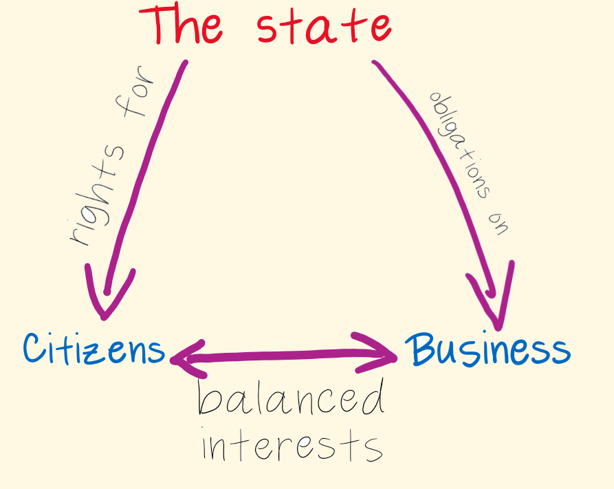
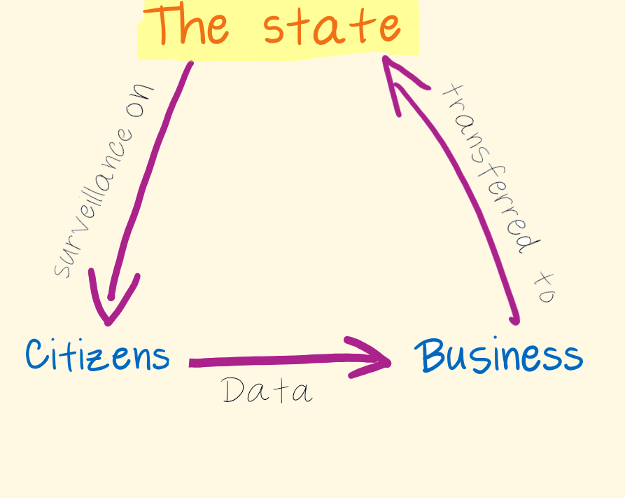

Whose Interest in Data Prevails?
7 March, 2023
1. Taking into account the state of the art, the costs of implementation and the nature, scope, context and purposes of processing as well as the risk of varying likelihood and severity for the rights and freedoms of natural persons, the controller and the processor shall implement appropriate technical and organisational measures to ensure a level of security appropriate to the risk, including inter alia as appropriate:
(a) the pseudonymisation and encryption of personal data;
(b) the ability to ensure the ongoing confidentiality, integrity, availability and resilience of processing systems and services;
(c) the ability to restore the availability and access to personal data in a timely manner in the event of a physical or technical incident;
(d) a process for regularly testing, assessing and evaluating the effectiveness of technical and organisational measures for ensuring the security of the processing.
2. In assessing the appropriate level of security account shall be taken in particular of the risks that are presented by processing, in particular from accidental or unlawful destruction, loss, alteration, unauthorised disclosure of, or access to personal data transmitted, stored or otherwise processed.
3. Adherence to an approved code of conduct as referred to in Article 40 or an approved certification mechanism as referred to in Article 42 may be used as an element by which to demonstrate compliance with the requirements set out in paragraph 1 of this Article.
4. The controller and processor shall take steps to ensure that any natural person acting under the authority of the controller or the processor who has access to personal data does not process them except on instructions from the controller, unless he or she is required to do so by Union or Member State law.
33(1) In the case of a personal data breach, the controller shall without undue delay and, where feasible, not later than 72 hours after having become aware of it, notify the personal data breach to the supervisory authority competent in accordance with Article 55, unless the personal data breach is unlikely to result in a risk to the rights and freedoms of natural persons. Where the notification to the supervisory authority is not made within 72 hours, it shall be accompanied by reasons for the delay.
33(2). The processor shall notify the controller without undue delay after becoming aware of a personal data breach.
34(1). When the personal data breach is likely to result in a high risk to the rights and freedoms of natural persons, the controller shall communicate the personal data breach to the data subject without undue delay.
34(2). The communication to the data subject referred to in paragraph 1 of this Article shall describe in clear and plain language the nature of the personal data breach and contain at least the information and measures referred to in points (b), (c) and (d) of Article 33(3) [nature of the breach; DPO contact points; likely consequences; measures taken].


using Western legal frameworks to make sense of Chinese developments risks creating blind spots concerning those elements of the Chinese legal order not easily captured in Western legal theory, but which may be crucial to understanding law is conceived and drafted, implemented, and enforced…Furthermore, legal developments do not occur in a vacuum, but must be situated in the broader societal, political, and economic context in which they occur. Mere reference to potentially comparable legislative developments elsewhere can only illuminate a small part of the puzzle
Creemers R, ‘China’s Emerging Data Protection Framework’ (2022) 8 Journal of Cybersecurity 1
Ciarán O’Kelly | 07/03/2023